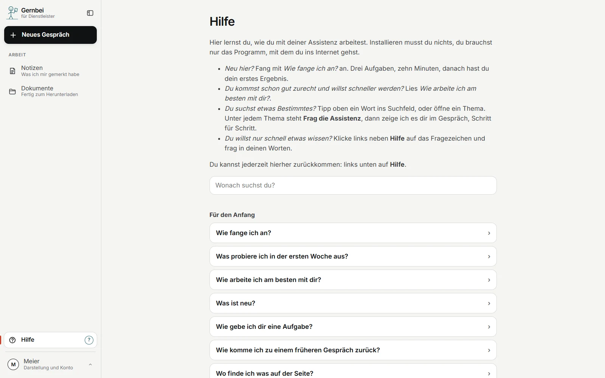

Für alle, die ihre Firma selbst tragen
Die Arbeit für Ihre Kunden machen Sie. Den Papierkram nicht mehr.
Gernbei vergisst nichts, was Sie hineingeben, und findet es wieder. Daraus entstehen Angebote, Protokolle und Antworten. Abschicken tun Sie.
So starten SieLäuft bei Amazon. Kein Rechner nötig.
Hakt beim Einrichten etwas, helfe ich.
Die Arbeitsfläche am Rechner. Erfundener Betrieb, echte Antwort.
Sie kennen das
Ob Sie vermitteln, beraten, gestalten oder Projekte leiten: Die Arbeit für Ihre Kunden macht Ihnen Freude. Angebote, Kundenpost, Termine und das Nachfassen fressen die Abende.
Sie wissen, was drinstehen soll. Nur nicht, wo das alte liegt, an dem Sie sich orientieren wollten.
Ein Kunde will bis morgen wissen, wo seine Sache steht. Der Stand steckt in Mails, Gesprächsnotizen und Ihrem Kopf.
"Schicke ich Ihnen bis Freitag." Stand nirgends, nur in Ihrem Kopf, und der war voll.
Was Gernbei sich merkt
Jede Mail, jede Datei, jede Zusage wird abgelegt, mit Datum und Kunde oder Projekt. Nach Wochen fragen Sie einfach.
„Was haben wir Huber im März zugesagt?“ Gernbei sucht in Ihren Notizen und Unterlagen
Jede Antwort nennt die Stelle, oder Gernbei sagt offen, dass es keinen Beleg gibt
Notizen und Dokumente sehen Sie jederzeit in der Arbeitsfläche, mit Suche. Alles lässt sich als Paket herunterladen
Was Gernbei für Sie tut
In Ihrem Stil, mit dem Stand von letzter Woche. Vor dem Versand prüft Gernbei Summen und leere Felder und vergibt die Angebotsnummer selbst
Neuer Kunde, neues Mandat, neues Projekt: ein Satz, und Gernbei legt den Vorgang an, mit Beteiligten und offenen Punkten
Gesprächsprotokoll, Statusbericht, Entscheidungsvorlage. Als Word-Datei, aus Ihren Notizen
„Schicke ich Ihnen bis Freitag“: was Sie wem bis wann versprochen haben, steht beim Vorgang und morgens im Bericht
Die Kundenmail, der Zettel, das alte Angebot über die Büroklammer oder einfach ins Gespräch gezogen. Zahlen, die Gernbei vom Foto liest, sehen Sie zur Kontrolle, bevor sie aufs Blatt gehen
Das Mikrofon Ihres Handys schreibt in die Zeile
Fehlt eine Angabe, fragt Gernbei nach, statt sie zu ergänzen. Was rausgeht, lesen Sie trotzdem vorher. Den nächsten Schritt tippen Sie einfach an
Nachts wird gesichert und geprüft. Morgens ist klar, was offen ist. Nach dem Urlaub gibt es zuerst einen kurzen Stand
Bis zu drei Aufträge vormerken, Gernbei arbeitet sie nacheinander ab
Steckbrief, Projektstrukturplan, Arbeitspakete, Termin- und Kostenplan, Kommunikationsplan, Änderungsantrag, Abnahme. Klassisch, agil oder hybrid, ob Meilenstein oder Sprint
Nachts oder auf Ihren Tipp. Eine Karte zeigt, was neu ist
Mit Microsoft 365
Gelesen und geschrieben wird nur, wenn Sie es sagen, und nur in der Datei, die Sie nennen. Gelöscht wird nichts. Wer Ihr Microsoft-Konto verwaltet, gibt die Verbindung einmal frei und kann sie jederzeit abschalten; das richte ich mit Ihnen ein.
Was Sie sonst einkaufen
| Sonst liefert das | Bei Gernbei im Preis |
|---|---|
| Social-Media-Agentur, Texter | Beiträge und Profiltexte für LinkedIn, Instagram, Facebook, TikTok, YouTube und das Google-Unternehmensprofil, aus Ihrer Ablage, mit Hinweis, wenn eine Pflichtangabe fehlt. Online stellen Sie selbst |
| Büroservice, Assistenz | Aufgaben organisieren: was ansteht, was wartet, was fällig ist, mit Fristen und Wiedervorlagen |
| Präsentationsgestalter | Ein Foliensatz aus einem Dokument oder drei Stichworten |
| Unternehmensberater | Eine Entscheidungsvorlage auf einer Seite, mit Empfehlung und Gegenrede |
| Projektbüro | Protokoll und Statusbericht aus Ihren Notizen |
| Moderator | Ein Workshop: Agenda, Moderationsplan, Ergebnisprotokoll aus den Fotos der Karten |
| Qualitätsberater | Maßstab und Prüfliste für das erste Blatt einer Art |
| Kanzlei, Dienstleister | Angaben über Dritte aus Unterlagen nehmen, bevor sie weitergehen: Personen werden Rollen, Anschriften werden Orte. Sie sehen das Ergebnis vorher, unsichere Stellen nennt Gernbei |
Online stellen Sie selbst, mit einem Klick, und das bleibt so.
Was Gernbei nicht tut
Gernbei geht nicht ans Telefon, verschickt nichts, auch nicht aus Outlook, und veröffentlicht nichts. Hinaus geht nur, was Sie abschicken.
Sie sind nie allein

Die Hilfe, in der Arbeitsfläche selbst.
Der Preis
Den Preis nenne ich Ihnen im Gespräch, passend zu Ihrer Firma.
Dazu brauchen Sie ein eigenes Claude-Team bei Anthropic, dem Hersteller der KI.
Angebot nur für Unternehmer.
Hilft Ihnen jemand, etwa in der Buchhaltung oder als Partner? Diese Person bekommt einen eigenen Zugang zum selben Preis und sieht nur ihre Arbeit. Einen gemeinsamen Bereich vereinbaren wir auf Wunsch.
Wo Ihre Daten liegen
Ihre Unterlagen liegen bei Amazon Web Services in der EU, in Stockholm, in einem Bereich nur für Ihre Firma. Betreut und jede Nacht gesichert wird er von mir, neue Stände kommen von selbst. Was Gernbei für eine Antwort liest, verarbeitet Anthropic auch in den USA; Amazon und Anthropic sind amerikanische Unternehmen.
Zwanzig Minuten, online oder bei einem Kaffee in Würzburg. Bringen Sie eine Kundenmail, Gesprächsnotizen oder ein altes Angebot mit, dann sehen Sie, welchen Entwurf Gernbei daraus macht und woher die Angaben stammen.
Passt es, richte ich Ihnen Ihren Arbeitsplatz ein. Passt es nicht, sage ich Ihnen das.
Oder direkt: hallo@gernbei.de · 0931 45321005 · Würzburg · remote & vor Ort